행사
전공의 FAIR
전공의 FAIR는 외과학교실 전공의들이 한자리에 모여 강의를 듣고, 간담회와 레크리에이션으로 연차와 병원을 넘어 어울리는 행사입니다. 연도를 골라 프로그램과 사진을 볼 수 있습니다.
2026 전공의 FAIR
- 일시
- 2026년 6월 13일(토)–14일(일)
- 장소
- 서울성모병원 대학본관 106호 강의실, 파주 원과호 펜션

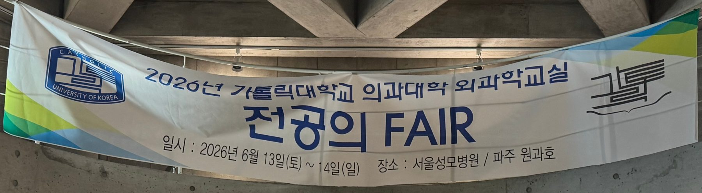
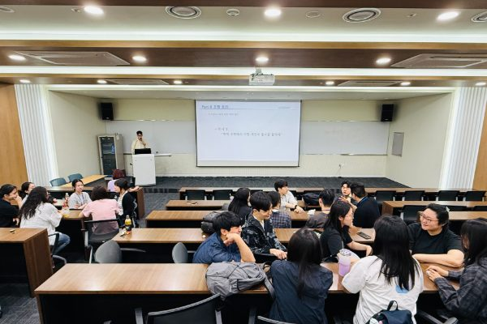
강의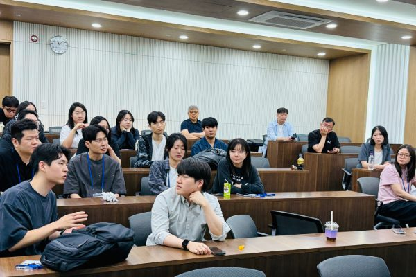
강의를 듣는 전공의들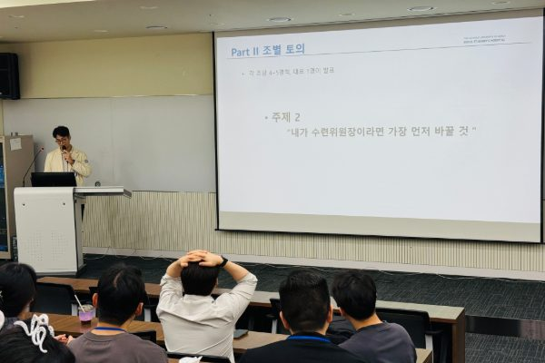
조별 토의 (주제: 내가 수련위원장이라면 가장 먼저 바꿀 것)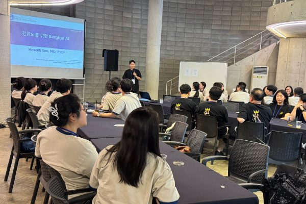
전공의를 위한 Surgical AI 강의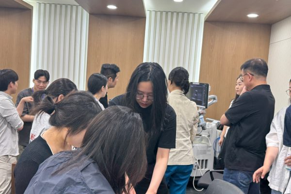
초음파 실습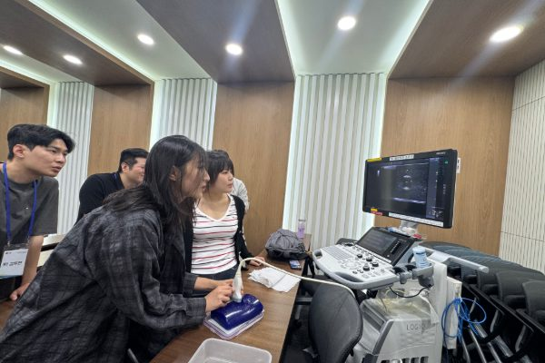
초음파 실습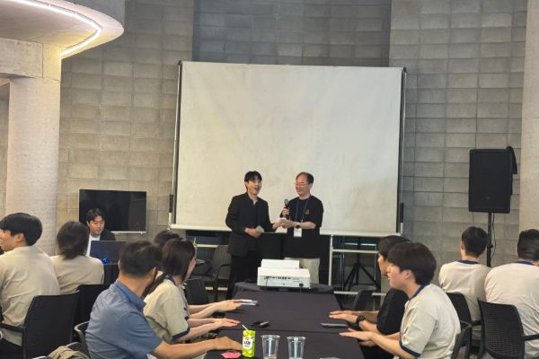
파주 원과호 펜션 강당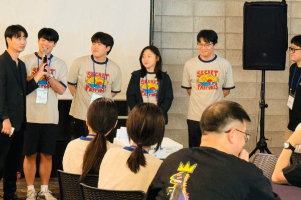
조별 발표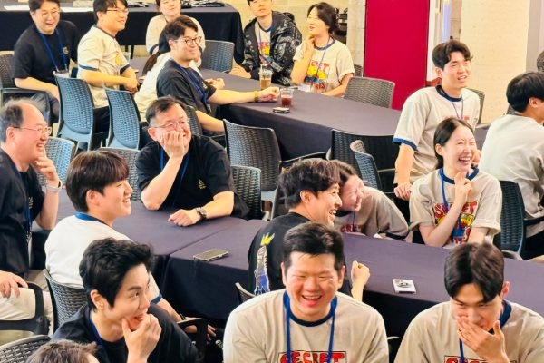
조 활동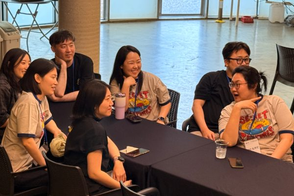
조 활동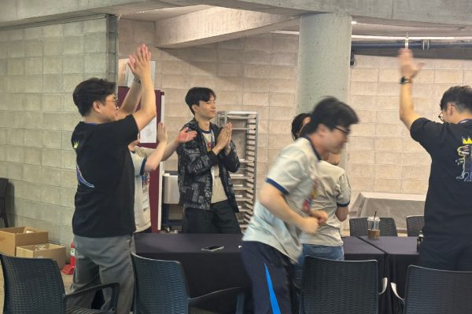
레크리에이션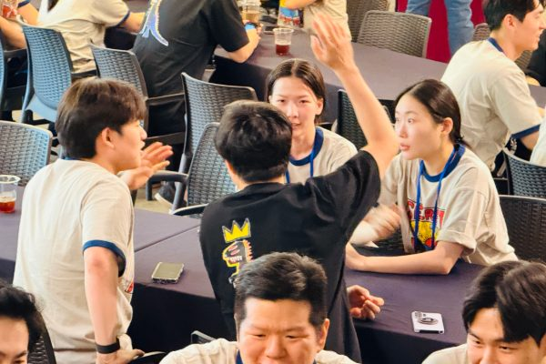
레크리에이션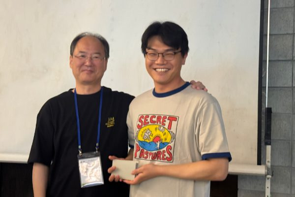
시상


2023 전공의 FAIR
- 일시
- 2023년 7월 1일(토)–2일(일)
- 장소
- 서울성모병원 106 강의실(대학본관), 대웅경영개발원 본관 대강당
- 프로그램
- 전공의 필수 수술, 나도 할 수 있다! (Line insertion, Lap. appendectomy, Lap. cholecystectomy, Inguinal hernia surgery)
- 연구야 놀자! (연구계획서 작성과 IRB, CMC nU CDW를 이용한 연구, ChatGPT를 이용한 논문 작성)
- 전공의 소통을 위한 강의, 전공의 간담회
- 레크리에이션 (줄다리기, 단체줄넘기, CMC오락관), 저녁 식사와 친교의 시간
- 연차별 간담회 결과 발표, 시상 및 맺음말

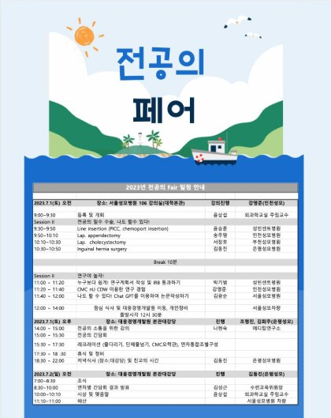

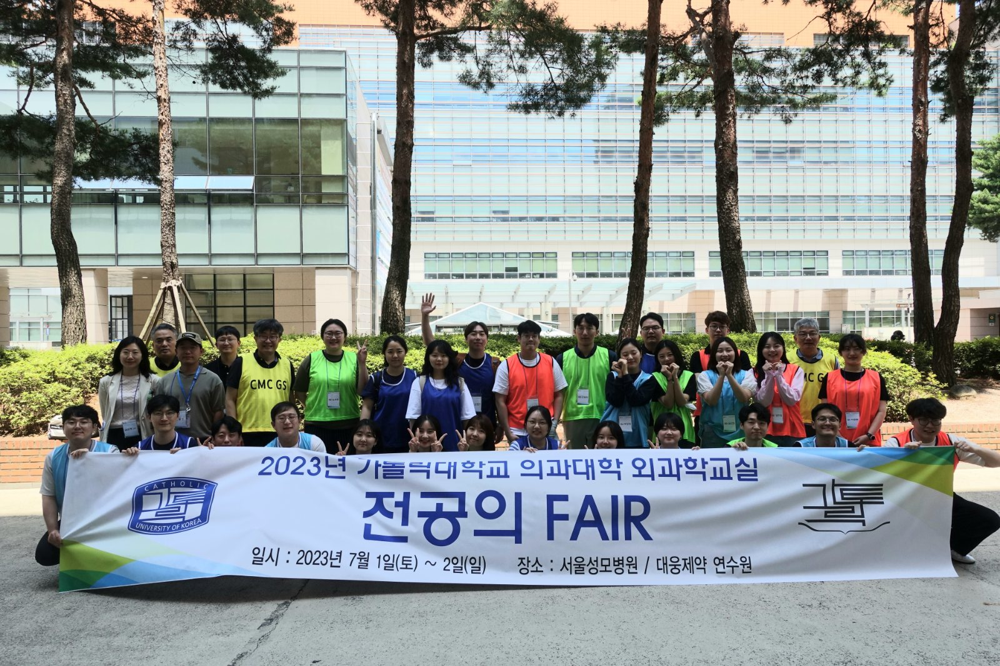
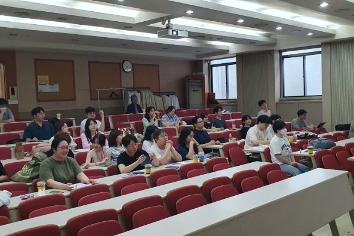
첫째 날 오전 강의 (서울성모병원 106 강의실)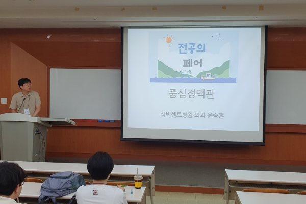
전공의 필수 수술 강의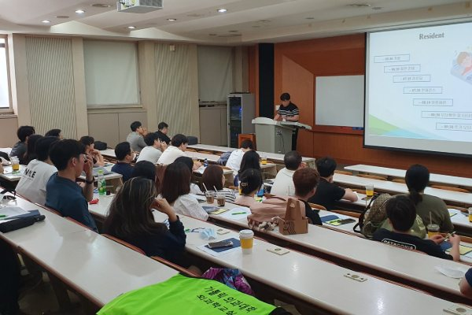
오전 강의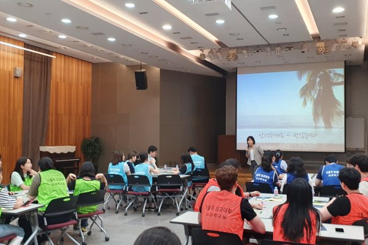
대웅경영개발원 본관 대강당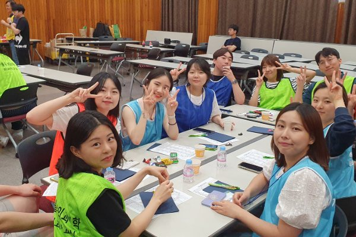
연차 통합 조 활동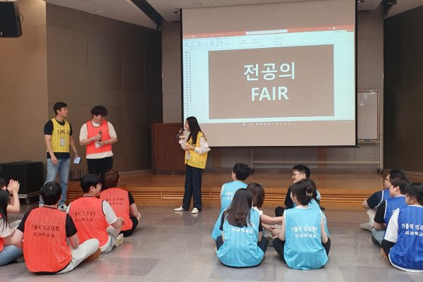
레크리에이션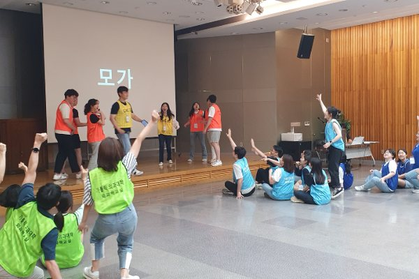
레크리에이션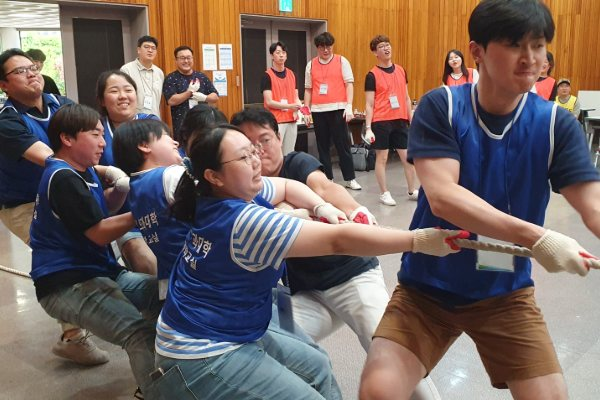
줄다리기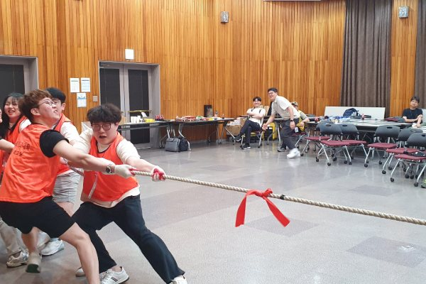
줄다리기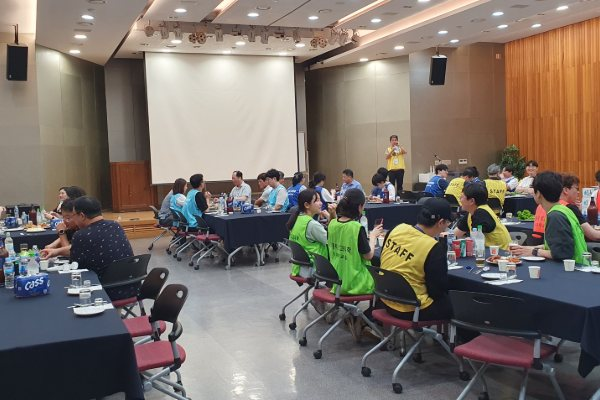
저녁 식사와 친교의 시간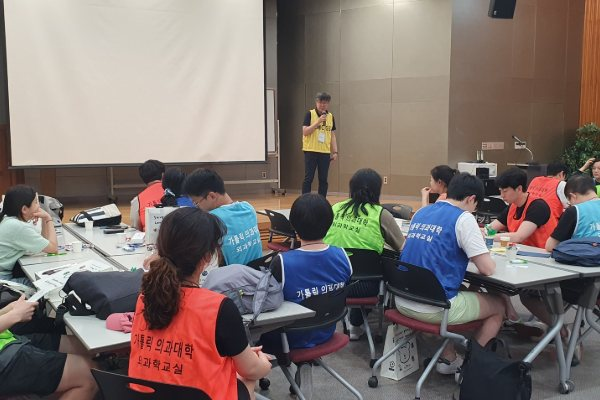
간담회 발표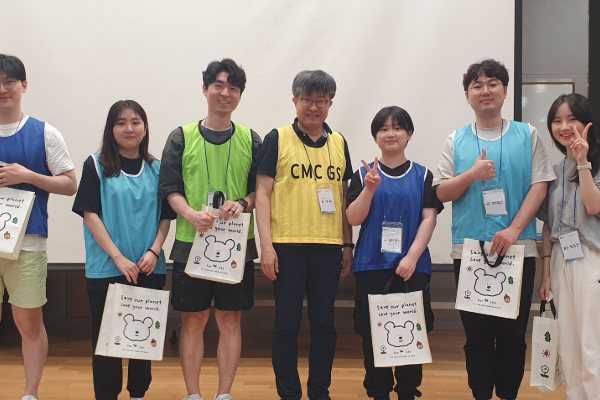
시상


2022 전공의 FAIR
- 일시
- 2022년 7월 2일(토)–3일(일)
- 장소
- 서울성모 의대본관 106호, 대웅경영개발원(용인)
- 프로그램
- 전공의 술기교육 이론(energy device, 복부 초음파, airway와 ventilator setting)
- 전공의 필수 수술: 탈장학 개론
- 연차별 간담회와 발표, 레크리에이션
- 시상 및 맺음말

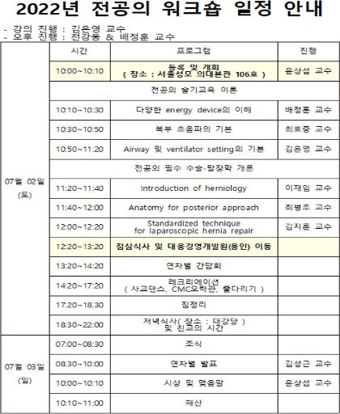
2017 전공의 FAIR
- 일시
- 2017년 6월 10일(토)–11일(일)
- 장소
- 서울성모병원, 대웅경영개발원